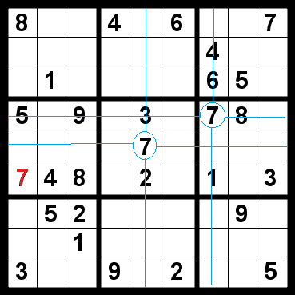

Sudoku
Posted in Sem categoria on junho 28th, 2013 by Cassio dos Santos Sousa – Be the first to commentUm dos meus vícios atuais no meu tempo livre é o Sudoku. De modo resumido, você tem de preencher 81 quadradinhos com os números de 1 a 9, de tal forma que, para cada linha, coluna ou quadrado 3×3 denotado, cada um dos nove números apareça uma única vez. Como há várias formas diferentes (de acordo com o Wikipédia, mais de 10^20) de se preencher os 81 quadradinhos, ele já começa com alguns números preenchidos para você, de tal forma que haja apenas uma solução capaz de cobrir o tabuleiro seguindo as regras.

O jogo é interessante pela proposta aparentemente simples que ele apresenta, mas a lógica necessária para o preenchimento de todos os quadradinhos brancos não é tão imediata. Ainda não cheguei ao ponto de resolver um Sudoku pensando relativamente pouco e preenchendo muito (jogo somente na modalidade mais difícil há bastante tempo, e ainda demoro mais de meia hora em alguns deles).
No entanto, se você partir do fato que o Sudoku possui apenas uma solução, é possível até programar o jogo em nome de uma solução. Pretendo, em algum momento, fazer este programa (a lógica não parece tão difícil, só o meu cérebro que demora para processar mesmo), mas há vários truques (por falta de criatividade, serão chamados de “truques” genericamente mesmo) que ajudam a resolver um Sudoku tanto computacionalmente quanto no papel:
O truque dos 20
Todo quadrado tem como limitante os oito quadrados que estão na mesma linha, coluna ou quadrado 3×3 (num total de 20 quadrados), e a limitação presente é justamente a regra principal do jogo: não pode haver repetição dos 9 dígitos. Esta regra é boa para preencher números no tabuleiro, e deixa claro que o número colocado está correto.
Derivações mais simples dele considerariam apenas duas das três formas presentes (apenas o quadrado 3×3 e a linha/coluna, ou apenas a linha e a coluna), ou talvez apenas uma, mas costuma ser mais simples ter noção dos 20 quadrados limitantes, ao menos para o sudoku preenchido no papel. Se tiver mais sugestões, mande-a como comentário, mas eu costumo usar estas aqui, e costuma não trazer erros.
O truque da eliminação
Ele não envolve diretamente a regra principal do jogo, mas sim a sua estrutura espacial, e funciona de um modo inverso ao truque anterior. Quando um número está corretamente colocado no tabuleiro, ele elimina a possibilidade de se preencher o mesmo número em 20 outras casas. Isso é muito bom para eliminar números possíveis num quadradinho branco.
Deste segundo truque, vem algumas derivações do mesmo, que podem ser mais úteis do que sua aplicação literal.
O truque do cruzamento (para quadrados 3×3)
Este truque é particularmente útil para marcar possíveis números em quadradinhos brancos (possibilidade de aplicativos de Sudoku em geral, ou quando se está preenchendo o tabuleiro a lápis). Você, basicamente, restringe-se a um quadrado 3×3 no qual um determinado número ainda não foi encontrado. A partir daí, você vasculha as três linhas e três colunas que contêm o quadrado 3×3. Se qualquer um destes seis trechos possuir o número de interesse, você elimina a possibilidade de o mesmo estar presente na intersecção do trecho com o quadrado.

Truque bastante útil quando parece haver muitos números iguais espalhados no tabuleiro.
O truque da eliminação rápida (para uma linha ou coluna)
Considere os três quadrados 3×3 que contêm uma linha/coluna de interesse. O truque consiste em eliminar a possibilidade de se preencher um número nesta linha/coluna quando ele está presente em algum dos três quadrados. Isso pode ser muito útil quando você está ainda “vasculhando” alguma região, pois a presença de um determinado número neste formato elimina três quadrados da sua linha/coluna. Este seria um dos truques mais úteis na minha opinião, e pode agilizar o preenchimento quando há poucos números restantes numa linha/coluna, ou quando há muitos dígitos iguais próximos à linha/coluna, mas não nela.
O caso extremo deste truque recai no truque do cruzamento.
O truque do número duplo (quando se pode “rascunhar” um quadradinho)
Para que ele funcione, você precisa ser capaz de “rascunhar” um quadrado (por lápis ou por aplicativo). Truque muito útil por delimitar preenchimentos, consiste em denotar as possibilidades de se preencher todos os números que restam numa determinada linha, coluna ou quadrado 3×3, tendo em mente as regras de eliminação mostradas anteriormente.
Preenchido todo o trecho de 9 quadradinhos de interesse, você procura por quadradinhos que possuam um mesmo número de possíveis dígitos (i.e., três números são possíveis em três quadradinhos, dois número são possíveis em dois quadradinhos, etc). Se existir algum conjunto assim, você mantém a anotação nestes quadradinhos e ignora os dígitos delimitados, e tenta preencher os demais.
Por fim, para os demais quadradinhos (ou caso não haja esse tipo de delimitação), você mantém apenas as anotações de quadradinhos com dois números possíveis. Isso agiliza muito na hora de preencher conforme os números vão saindo, e pode dar uma noção bem mais clara e visível da localização dos mesmos.
Estes pequenos truques (ou qualquer outro que lhe apareça, use-o sem medo se ele se mostrar efetivo) podem facilitar o preenchimento de um Sudoku, mas não garantem (ao menos não para mim) respostas rápidas. O Sudoku considera uma disposição espacial de números com regras específicas para seu preenchimento correto, e, partindo de uma solução única, fica difícil “arriscar” o preenchimento, pois o erro pode se tornar evidente após várias jogadas, e isso costuma fazer você recomeçar o jogo.
Apesar de envolver bastante lógica, é um jogo, e para ele, a prática também costuma levar à perfeição. Não se assuste se alguém disser que achou “o Sudoku mais difícil do mundo”, pois a pessoa pode ter usado um raciocínio que falha no mesmo. Se o Sudoku tiver apenas uma solução, não há mais segredo.


{kind=link}
{kind=link}
{kind=link}
{kind=link}